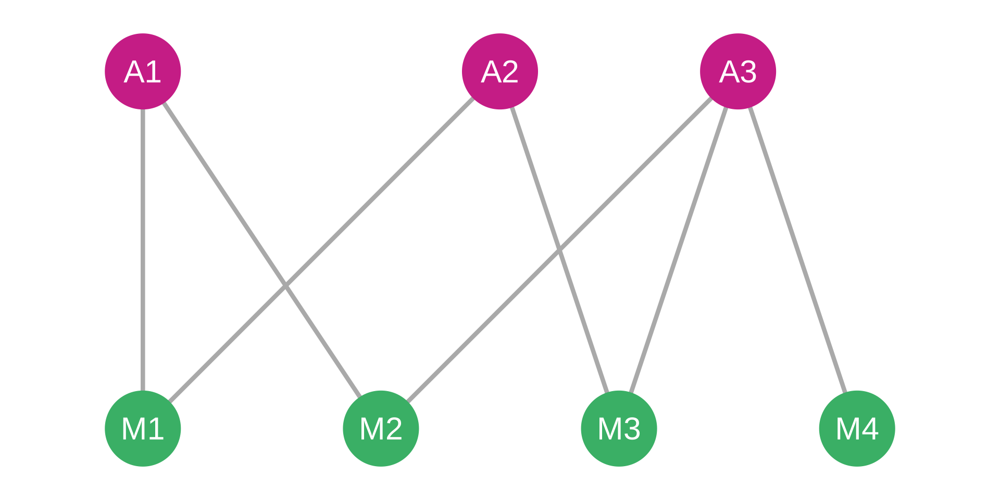
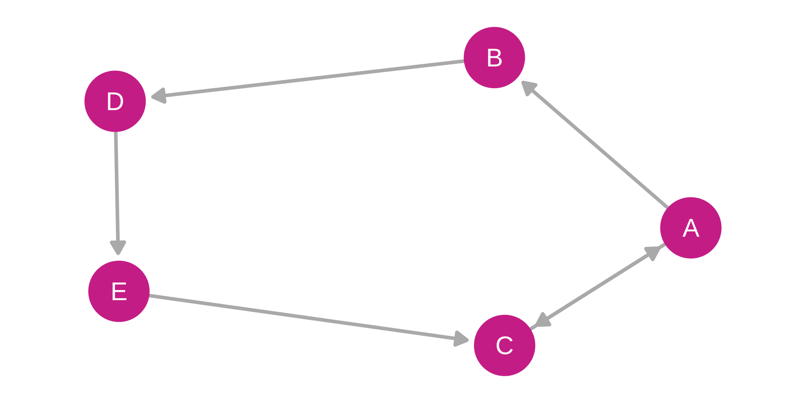
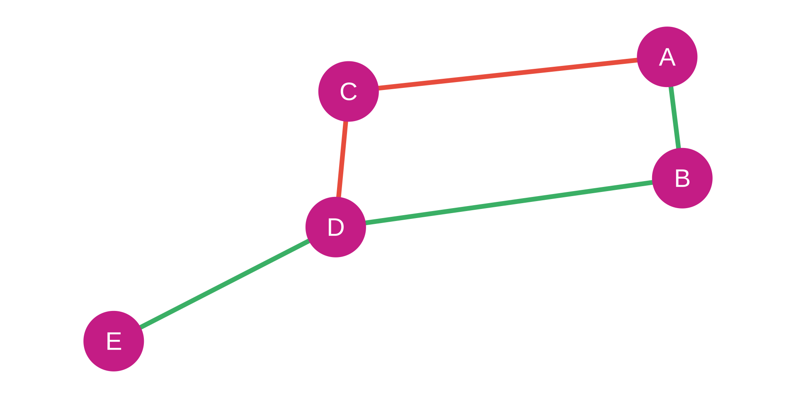
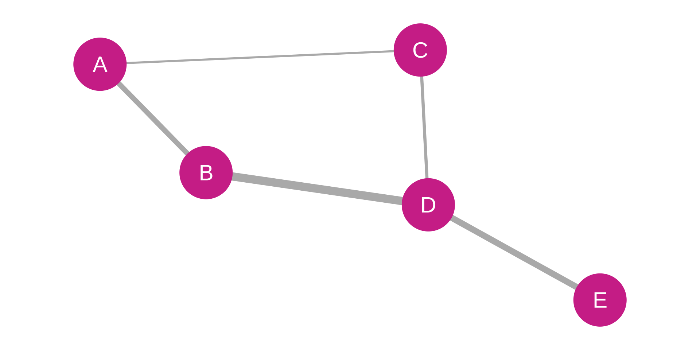
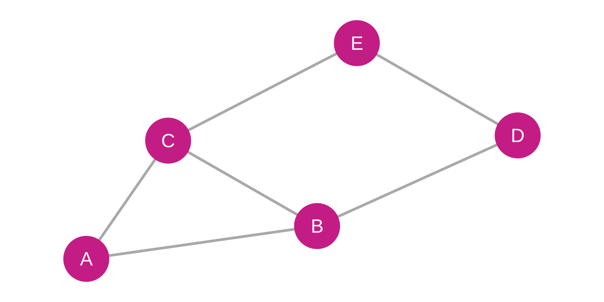
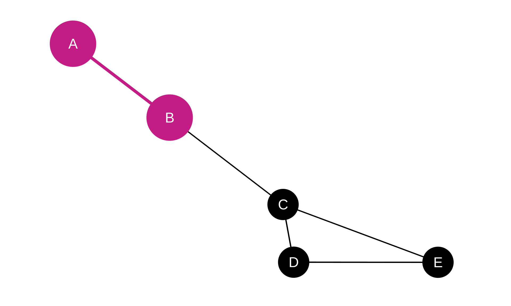
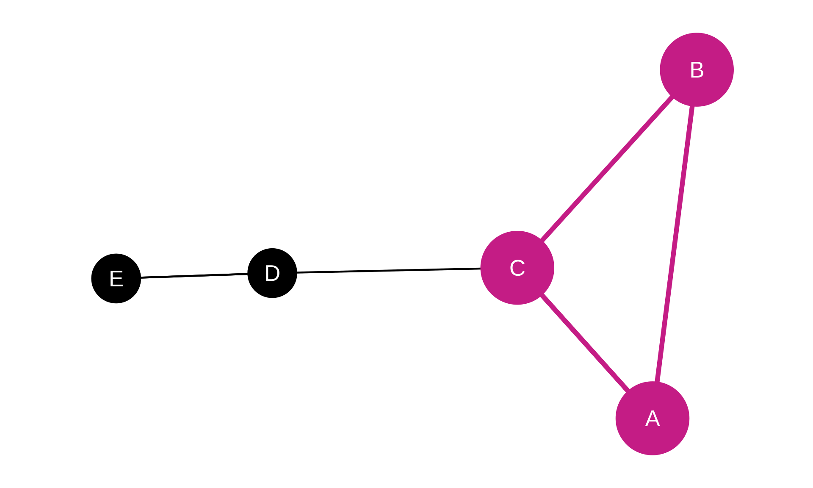

Fundamental Network Concepts
Building Blocks of Network Analysis
SMM638 Network Analytics
What is a Graph?
Mathematical Foundation:
A graph \(G\) is defined as: \(G = \{V, E\}\)
Where:
- \(V = [v_1, v_2, ..., v_i, ..., v_n]\) (vertices/nodes)
- \(E = [(v_1, v_2), (v_1, v_i), ..., (v_i, v_j)]\) (edges/links)
In Plain Language:
- Vertices (Nodes): The entities or objects
- Edges (Links/Ties): The connections or relationships
- Graph: The complete structure of nodes and edges
Vertices (Nodes)
Vertices represent the fundamental units in a network
Examples across domains:
- Social networks: People, organizations, groups
- Biological networks: Proteins, genes, organisms
- Technological networks: Computers, routers, devices
- Economic networks: Companies, banks, countries
Node Attributes:
- Demographic characteristics (age, location)
- Type or category (customer, supplier, partner)
- Performance metrics (revenue, citations, activity)
- Temporal information (founding date, tenure)
Edges (Links/Ties)
Edges encode relationships between nodes
Key Properties:
- Direction
- Directed: One-way relationships (A → B)
- Undirected: Mutual relationships (A — B)
- Weight
- Weighted: Strength or frequency of connection
- Unweighted: Binary presence/absence
- Sign
- Positive: Friendship, cooperation, support
- Negative: Conflict, competition, animosity
- Type
- Multiple relationship types (multiplex networks)
Network Relationships
What Constitutes a Connection?
The definition of a relationship determines:
- What edges mean and how to interpret them
- Whether relationships are symmetric or asymmetric
- How to measure or identify connections
- The substantive interpretation of patterns
Examples:
- Social: Friendship, advice-seeking, collaboration
- Economic: Trade, investment, supply relationships
- Information: Email exchange, citations, hyperlinks
- Biological: Protein interactions, predator-prey
One-Mode Networks
Unipartite Networks: One Type of Node
All nodes are of the same type; connections occur between similar entities
Common Examples:
- Friendship networks: People ↔︎ People
- Citation networks: Papers → Papers
- Trade networks: Countries ↔︎ Countries
- Collaboration networks: Scientists ↔︎ Scientists
Characteristics:
- Adjacency matrix is square (n × n)
- Can calculate standard network metrics
- Direct interpretation of connection patterns
Adjacency Matrix:
| Node | A | B | C | D | E |
|---|---|---|---|---|---|
| A | 0 | 1 | 1 | 0 | 0 |
| B | 1 | 0 | 1 | 1 | 0 |
| C | 1 | 1 | 0 | 0 | 1 |
| D | 0 | 1 | 0 | 0 | 1 |
| E | 0 | 0 | 1 | 1 | 0 |
Two-Mode Networks
Bipartite Networks: Two Types of Nodes
Edges only connect nodes of different types
Common Examples:
- Actor-Movie: Actors ↔︎ Movies
- Author-Paper: Authors ↔︎ Publications
- Customer-Product: Buyers ↔︎ Items purchased
- Student-Course: Students ↔︎ Classes enrolled
Analytical Approaches:
- Analyze the bipartite structure directly
- Project onto one-mode networks (actors ↔︎ actors who shared movies)
- Examine affiliation patterns

Incidence Matrix:
| Actor | M1 | M2 | M3 | M4 |
|---|---|---|---|---|
| A1 | 1 | 1 | 0 | 0 |
| A2 | 1 | 0 | 1 | 0 |
| A3 | 0 | 1 | 1 | 1 |
Directed Networks
Asymmetric Relationships with Direction
Edges have a source and target: \(A \rightarrow B\)
Key Examples:
- Email networks: Sender → Receiver
- Citation networks: Citing paper → Cited paper
- Food webs: Predator → Prey
- Twitter: Follower → Followed account
Important Distinctions:
- In-degree: Incoming connections (popularity, citations received)
- Out-degree: Outgoing connections (activity, citations made)
- Reciprocity: Do ties go both ways?

Adjacency Matrix:
| Node | A | B | C | D | E |
|---|---|---|---|---|---|
| A | 0 | 1 | 1 | 0 | 0 |
| B | 0 | 0 | 0 | 1 | 0 |
| C | 1 | 0 | 0 | 0 | 0 |
| D | 0 | 0 | 0 | 0 | 1 |
| E | 0 | 0 | 1 | 0 | 0 |
Undirected Networks
Symmetric Relationships Without Direction
Edges represent mutual connections: \(A — B\)
Key Examples:
- Friendship networks: Mutual friendships
- Co-authorship: Joint publications
- Infrastructure: Roads, power grids, railways
- Protein interactions: Molecular binding
Characteristics:
- Connection implies reciprocal relationship
- Single degree measure (not in/out)
- Simpler mathematical properties
- Adjacency matrix is symmetric

Adjacency Matrix:
| Node | A | B | C | D | E |
|---|---|---|---|---|---|
| A | 0 | 1 | 1 | 0 | 0 |
| B | 1 | 0 | 1 | 1 | 0 |
| C | 1 | 1 | 0 | 0 | 1 |
| D | 0 | 1 | 0 | 0 | 1 |
| E | 0 | 0 | 1 | 1 | 0 |
Signed Networks
Edges Carry Positive or Negative Valence
Relationships can be friendly or hostile
Positive Edges (+):
- Friendship, alliance, cooperation
- Support, endorsement, trust
Negative Edges (−):
- Animosity, conflict, competition
- Opposition, distrust, rivalry
Applications:
- Social balance theory (enemy of my enemy is my friend)
- Coalition formation in politics
- Opinion polarization dynamics
- Organizational conflict analysis

Signed Adjacency Matrix:
| Node | A | B | C | D | E |
|---|---|---|---|---|---|
| A | 0 | 1 | -1 | 0 | 0 |
| B | 1 | 0 | 0 | 1 | 0 |
| C | -1 | 0 | 0 | -1 | 0 |
| D | 0 | 1 | -1 | 0 | 1 |
| E | 0 | 0 | 0 | 1 | 0 |
Weighted Networks
Edge Strength Varies Continuously
Weights represent connection intensity, frequency, or capacity
Examples:
- Communication: Number of messages exchanged
- Transportation: Traffic volume, distance, capacity
- Financial: Transaction amounts, investment size
- Neural: Synaptic strength between neurons
Analytical Implications:
- Can identify strong vs. weak ties
- Weighted centrality measures
- Flow and capacity analysis
- More nuanced than binary networks

Weighted Adjacency Matrix:
| Node | A | B | C | D | E |
|---|---|---|---|---|---|
| A | 0 | 5 | 2 | 0 | 0 |
| B | 5 | 0 | 0 | 8 | 0 |
| C | 2 | 0 | 0 | 3 | 0 |
| D | 0 | 8 | 3 | 0 | 6 |
| E | 0 | 0 | 0 | 6 | 0 |
Unweighted Networks
Binary: Connection Present or Absent
All edges treated equally (0 or 1)
Characteristics:
- Simpler to collect and analyze
- Focus on topology, not intensity
- May lose important information
- Standard network metrics apply directly
When Appropriate:
- Relationship strength unclear or unmeasurable
- Presence/absence is the key question
- Simplification aids interpretation
- Preliminary exploratory analysis

Adjacency Matrix:
| Node | A | B | C | D | E |
|---|---|---|---|---|---|
| A | 0 | 1 | 1 | 0 | 0 |
| B | 1 | 0 | 1 | 1 | 0 |
| C | 1 | 1 | 0 | 0 | 1 |
| D | 0 | 1 | 0 | 0 | 1 |
| E | 0 | 0 | 1 | 1 | 0 |
Dyads
The Simplest Network Substructure
A dyad consists of two nodes and potential edge(s) between them
Types in Directed Networks:
- Null dyad: No connection (0 edges)
- Asymmetric dyad: One-way connection (1 edge)
- Mutual/Reciprocal dyad: Two-way connection (2 edges)
Analytical Value:
- Foundation for reciprocity analysis
- Building block of larger structures
- Pairwise relationship dynamics
- Simplest unit of social interaction

Adjacency Matrix (Binary, Dyad Highlighted):
| Node | A | B | C | D | E |
|---|---|---|---|---|---|
| A | 0 | 1 | 0 | 0 | 0 |
| B | 1 | 0 | 1 | 0 | 0 |
| C | 0 | 1 | 0 | 1 | 1 |
| D | 0 | 0 | 1 | 0 | 1 |
| E | 0 | 0 | 1 | 1 | 0 |
Triads
Three Nodes and Their Connections
Triads are fundamental for understanding:
Key Concepts:
- Transitivity: “Friend of friend is friend” (A→B, B→C, A→C)
- Structural balance: Stability of positive/negative relationships
- Clustering: Local cohesion patterns
- Network motifs: Recurring small-scale patterns
Example Patterns:
- Open triad: A→B, B→C (no A→C)
- Closed triad: A→B, B→C, C→A (triangle)
- Balanced triad: Signs follow balance theory rules
We’ll explore these deeply in Weeks 4-5

Adjacency Matrix (Binary, Triad Highlighted):
| Node | A | B | C | D | E |
|---|---|---|---|---|---|
| A | 0 | 1 | 1 | 0 | 0 |
| B | 1 | 0 | 1 | 0 | 0 |
| C | 1 | 1 | 0 | 1 | 0 |
| D | 0 | 0 | 1 | 0 | 1 |
| E | 0 | 0 | 0 | 1 | 0 |
Key Takeaways
Caution
Core Building Blocks:
- Networks = Nodes + Edges + Relationships
- Direction matters: Symmetric vs. Asymmetric
- Weights capture relationship intensity
- Signs represent positive/negative ties
- Mode determines what connects to what
Tip
Analytical Foundation:
- Choice of representation affects analysis
- Different network types require different methods
- Substructures (dyads, triads) reveal patterns
- Complex networks require sophisticated approaches
Next: We’ll use these concepts to measure and analyze real networks